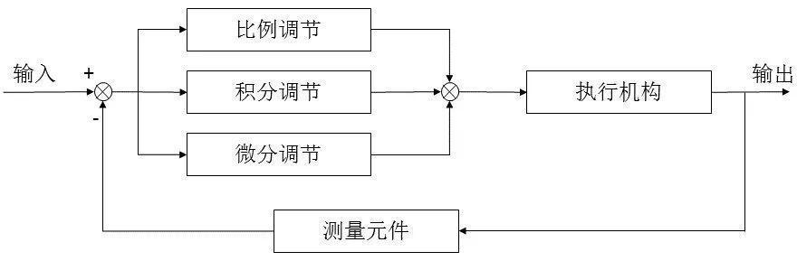
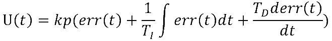
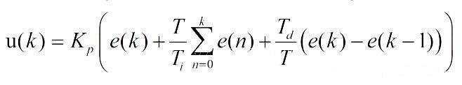
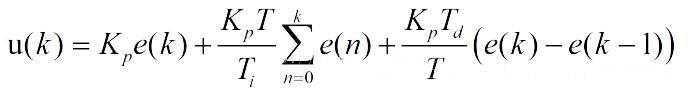
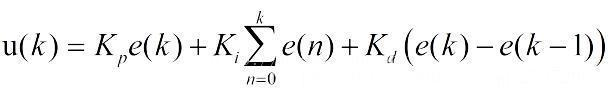

PID在手，天下我有
PID
♪
万能算法
在工业应用中 PID 及其衍生算法是应用最广泛的算法之一，是当之无愧的万能算法，如果能够熟练掌握 PID 算法的设计与实现过程，对于一般的研发人员来讲，应该是足够应对一般研发问题了，而难能可贵的是，PID 控制算法又是比较简单，比较能够体现反馈思想的控制算法，可谓经典中的经典。
接下来就为大家简单介绍一下吧
PID(proportion integration differentiation)其实就是指比例，积分，微分控制。最早提出PID控制理念的是瑞典裔美国人奈奎斯特，他在一篇论文当中写到了采用图形的方法来判断系统的稳定性，在他的基础上，伯德等人建立了一整套在频域范围设计反馈放大器的方法，后被用于自动控制系统的分析和设计，这也是PID算法最早从书面走向实践，实际上算法远比此有更长的历史，早在1917年就出现了论述PID控制方法的论文。于是在1936年，PID开始广泛的用于工业控制，虽然没有今天这样方便的可编程嵌入式芯片，但当时的人们也用了堪称登峰造极的模拟电路控制，实现了不错的PID效果，难以想象那个年代人的创造力有多强。随着时间的推移，前人们对PID进行一次次的总结和延申，发展到现在，小到控制一个元件的温度，大到控制无人机的飞行姿态和飞行速度等等，都可以使用PID控制。


总的来说，就是在当得到系统的输出后，将输出经过比例，积分，微分3种运算方式，叠加到输入中，从而达到控制系统的行为的效果。
前文提到，PID就是比例，积分，微分控制。
先说PID中最简单的比例控制，抛开其他两个不谈。还是用一个经典的例子吧。假设有一个水缸，最终的控制目的是要保证水缸里的水位永远的维持在1米的高度。假设初试时刻，水缸里的水位是0.2米，那么当前时刻的水位和目标水位之间是存在一个误差的error，且error为0.8。这个时候，假设旁边站着一个人，这个人通过往缸里加水的方式来控制水位。如果单纯的用比例控制算法，就是指加入的水量u和误差error是成正比的。即 u=kp*error ，假设kp取0.5， 那么t=1时（表示第1次加水，也就是第一次对系统施加控制），那么u=0.5*0.8=0.4，所以这一次加入的水量会使水位在0.2的基础上上升0.4，达到0.6。接着，t=2时刻（第2次施加控制），当前水位是0.6，所以error是0.4。u=0.5*0.4=0.2，会使水位再次上升0.2，达到0.8。如此这么循环下去，就是比例控制算法的运行方法。
还是用上面的例子，如果仅仅用比例，可以发现存在暂态误差，最后的水位就卡在0.8了。于是，在控制中，我们再引入一个分量，该分量和误差的积分是正比关系。所以，比例+积分控制算法为： u=kp*error+ ki∗∫∗∫error 还是用上面的例子来说明，第一次的误差error是0.8，第二次的误差是0.4，至此，误差的积分（离散情况下积分其实就是做累加），∫∫error=0.8+0.4=1.2. 这个时候的控制量，除了比例的那一部分，还有一部分就是一个系数ki乘以这个积分项。由于这个积分项会将前面若干次的误差进行累计，所以可以很好的消除稳态误差（假设在仅有比例项的情况下，系统卡在稳态误差了，即上例中的0.8，由于加入了积分项的存在，会让输入增大，从而使得水缸的水位可以大于0.8，渐渐到达目标的1.0.）这就是积分项的作用。
换一个另外的例子，考虑刹车情况。平稳的驾驶车辆，当发现前面有红灯时，为了使得行车平稳，基本上提前几十米就放松油门并踩刹车了。当车辆离停车线非常近的时候，则使劲踩刹车，使车辆停下来。整个过程可以看做一个加入微分的控制策略。 微分，说白了在离散情况下，就是error的差值，就是t时刻和t-1时刻error的差，即u=kd*（error（t）-error（t-1）），其中的kd是一个系数项。可以看到，在刹车过程中，因为error是越来越小的，所以这个微分控制项一定是负数，在控制中加入一个负数项，他存在的作用就是为了防止汽车由于刹车不及时而闯过了线。从常识上可以理解，越是靠近停车线，越是应该注意踩刹车，不能让车过线，所以这个微分项的作用，就可以理解为刹车，当车离停车线很近并且车速还很快时，这个微分项的绝对值（实际上是一个负数）就会很大，从而表示应该用力踩刹车才能让车停下来。 切换到上面给水缸加水的例子，就是当发现水缸里的水快要接近1的时候，加入微分项，可以防止给水缸里的水加到超过1米的高度，说白了就是减少控制过程中的震荡。现在在回头看这个公式，就很清楚了

括号内第一项是比例项，第二项是积分项，第三项是微分项，前面仅仅是一个系数。很多情况下，仅仅需要在离散的时候使用，则控制可以化为


每一项前面都有系数，这些系数都是需要实验中去尝试然后确定的，为了方便起见，将这些系数进行统一一下：

这样看就清晰很多了，且比例，微分，积分每个项前面都有一个系数，且离散化的公式，很适合编程实现。
讲到这里，PID的原理和方法就说完了，剩下的就是实践了。在真正的工程实践中，最难的是如果确定三个项的系数，这就需要大量的实验以及经验来决定了。通过不断的尝试和正确的思考，就能选取合适的系数，实现优良的控制器。
图文来源于网络，如有侵权请联系删除
原文：https://blog.csdn.net/qq_25352981/article/details/81007075

排版：李亭熹